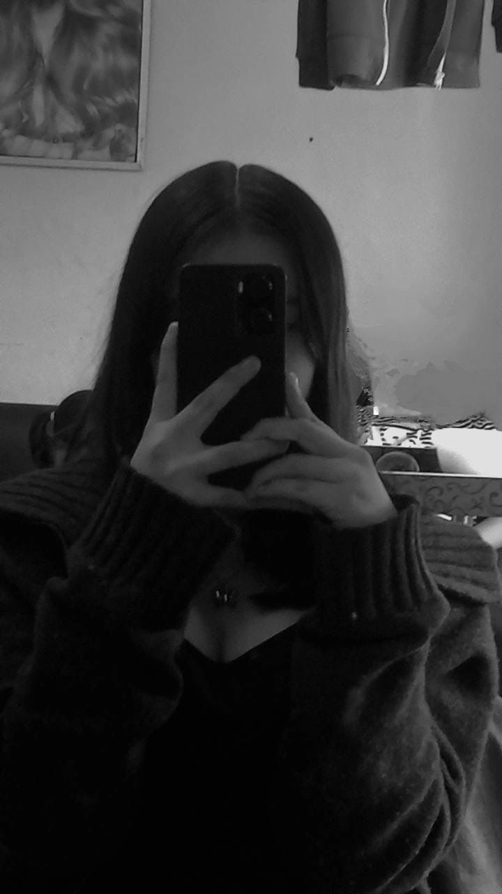

Alisüíñü•∫
TUS LAVIOS SON COMO UN DULCE QUE NO ME CANSARIA DE PROBAR,
NTC JSJSJ, BUENO SI NO TE GUSTA PUES NO HAY PROBLEMA,
PERO SI TE GUSTA PUES ME ENCANTARIA PROBARLOS,EN FIN
Tears In The Rain
El narrador reconoce que podría haber dejado ir a su amor, pero en cambio, permitió que se quedara y observara su caída. Este acto de retener a alguien por egoísmo, solo para perderlo todo eventualmente, refleja una lucha interna con la culpa y la autocompasión. 'Tears in The Rain' es un retrato íntimo de la lucha por encontrar significado y conexión en un mundo donde la fama puede aislar y desensibilizar a las personas de las experiencias humanas auténticas.
Kiss Land (Deluxe)
2013
Septiembre
10
reproducciones
68,524,536



Alisüíñü•∫
GRACIAS POR SER UNA AMIGA QUE SIEMPRE A ESTADO CONMIGO ERES ESPECIAL EN MI VIDA Y TE KIERO MUCHO, TE MANDO UN FUERTE ABRAZO Y ESPERO QUE ESTE CUMPLEA√ëOS SEA TAN ESPECIAL COMO TU ü•∞üíó
CRY FOR ME
The Weeknd expresa el deseo de que la persona amada sienta el mismo dolor que él, esperando que ella llore por él como él llora por ella. Esta falta de reciprocidad emocional es un tema central en la canción, destacando la soledad y la desesperación que acompañan el final de una relación significativa. La repetición de este anhelo subraya la intensidad de su tristeza y la esperanza de que su sufrimiento no sea en vano.
Hurry Up Tomorrow
2025
Febrero
4
reproducciones
100 Millones
Alisüíñü•∫
MI NECESIDAD POR CONECTARME CONTIGO ES TAN GRANDE QUE NO PUEDO DEJAR DE PENSAR EN TI,CREANDO A LA VES UN DESEO DE SENTIRTE CERCA.Y SE ME VIENEN LOS RECUERDOS DE TODAS LAS COSAS QUE HABÍAMOS PLANEADO HACER JUNTOS.
Blinding Lights
La letra de la canción refleja una intensa necesidad de
conexión y la búsqueda de algo o alguien que le dé sentido
a la vida del protagonista. En el contexto de la canción,
The Weeknd describe una soledad profunda y un deseo ardiente
de sentir el toque de una persona amada, lo que sugiere una
dependencia emocional o incluso una adicción.
After Hours
2020
Noviembre
29
reproducciones
5 Mil Millones
 });
});
Alisüíñü•∫
APESAR DE TODO LO QUE EH PASADO Y E SUFRIDO,MORIRIA POR TI Y CAMBIARIA TODO DE MI PARA AGRADARTE A TI Y NO TENER ESE MIEDO AQUE TODO VOLVERA ACABAR QUE SIEMPRE, PORQUE ERES PERFECTA PARA MI
Die For You
La canción es un testimonio de la lucha interna entre el deseo de mantenerse alejado del amor por miedo a sufrir y la incapacidad de hacerlo debido a la perfección que ve en la otra persona.
El coro de 'Die For You' es una declaración poderosa de compromiso y sacrificio. The Weeknd asegura que, a pesar de los desafíos y la distancia, su amor no cambiará y está dispuesto a morir por su pareja. Esta promesa de lealtad extrema es una metáfora del nivel de entrega y pasión que siente, sugiriendo que haría cualquier cosa por mantener la relación. La repetición de esta promesa a lo largo de la canción refuerza la idea de un amor incondicional y eterno.
Starboy
2016
Noviembre
25
reproducciones
81.1 Millonesp>

Alisüíñü•∫
CALL OUT MY NAME FUE LA PRIMERA CANCION QUE ESCUCHE DE THE Weeknd Y ME DABA UNA SENSACION MUY NO SE JEJE PORQUE ME SENTIA CASI COMO EL , ME ACAVAVAS DE DEJAR ME SENTIA MUY MAL PERO FUE CLAVE PARA QUE NO ME DOLIERA TANTO YA QUE CADA QUE LA ESCUCHAVA TE RECORDABA Y ESO ME HACIA FELIZ Y ME ISE UNA PREGUNTA POR QUE NO ESCUCHE ANTES THE WEEKND?
Call Out My Name
En 'Call Out My Name', The Weeknd canta sobre el sacrificio y la dedicación que ofreció a su pareja, a quien ayudó a superar un momento difícil ('I helped you out of a broken place'). Sin embargo, a pesar de su compromiso y de haberla puesto en un pedestal ('I put you on top'), se da cuenta de que su amor no es correspondido ('I want you to stay even though you don't want me'). La canción se convierte en un lamento por el amor no correspondido y la sensación de haber sido solo una parada temporal para su amante ('Guess I was just another pit stop').
My Dear Melancholy
2018
Marzo
30
reproducciones
900 Millones

Alisüíñü•∫
AVECES TRATO DE BUSCAR CONSUELO EN TI JSJS,O OLVIDARME DE TODO Y RECORDAR LO FELIZ QUE FUI
Wicked Games
The Weeknd canta sobre el vacío emocional y la búsqueda de consuelo en los placeres efímeros. La letra comienza con una confesión de infidelidad y desapego hacia su pareja, lo que establece un tono de desesperanza y desilusión. A medida que avanza la canción, se revela una mezcla de deseo y arrepentimiento, donde el protagonista ofrece todo lo que tiene, incluyendo su dolor y vergüenza, a cambio de una conexión, aunque sea momentánea y superficial. La repetición de 'Bring your love, baby, I can bring my shame' sugiere un intercambio tóxico de emociones y sustancias, simbolizando una relación destructiva y dependiente.
Trilogy
2011 agregada al allbum en 2012
Marzo
21
reproducciones
677 Millones

Alisüíñü•∫
I feel it coming .JSJS AVECES SIENTO QUE VIENE ESA FELICIDAD CONMIGO Y LA TRES TU COMO SI DEPENDIERA DE ESA FELICIDAD QUE ME CAUSAS PERO SE QUE ESA FELICIDAD NO ESTA CERCA YA QUE LAS COSAS YA NO SON IGUALES YA NO ES FACIL HACER QUE ME HABLES SJSCAMBIASTE MUCHO
I Feel It Coming
La letra de la canción refleja una conversación íntima y reconfortante entre dos personas, donde The Weeknd ofrece seguridad y paciencia a su pareja, quien ha sido lastimada por experiencias amorosas pasadas. La repetición del estribillo 'I feel it coming' actúa como un mantra que anticipa la llegada de algo grande y emocionante, probablemente un amor verdadero y liberador.
Starboy
2016
Noviembre
18
reproducciones
2 mil millones


Alisüíñü•∫
LAS COSAS DE LA VIDA TE AN ECHO MADURAR MAS RAPIDO DEVIDO A LAS COSAS QUE PASAN EN TU ENTORNO Y TU VIDA ES MUY DIFICIL ,PASASTE COSAS QUE NO DEVISTE PASAR CALLAR ALGO QUE POR DENTRO TE LASTIMAVA Y NADIE TE PODIA AYUDAR HISO QUE CAMBIARAS
IN THE NIGHT
La canción toca temas de abuso y explotación, como se sugiere en la línea 'she was young and she was forced to be a woman', lo que implica que la joven fue empujada a madurar demasiado rápido debido a circunstancias difíciles. La repetición de 'I don't think you understand' enfatiza la desconexión entre la vida de la mujer y la comprensión de los demás sobre su situación.
Beauty Behind the Madness
2015
AGOSTO
18
Reproducciones
700 millones

Alisüíñü•∫
ESE DECEO QUE SOLO TU ME PROVOCASTE Y QUE NADIE MAS PROVOCARA ,ASE QUE NUNCA SE OLVIDE ESOS RECUERDOS QUE SE VIENEN DE REPENTE A LA MENTE IMAGINARME TODO LO QUE PUDO AVER PASADO ESA SALIDA QUE NO PUDIMOS HACER SIEMPRE ME HACE PENSAR EN LO QUE UBIERA PASADO SI SI LO UBIERAMOS ECHO O NO
Lost in the Fire
La letra revela una narrativa donde el protagonista expresa un deseo sexual intenso y explícito hacia su pareja, enfatizando la importancia de la conexión física y emocional. La repetición de 'I can't lose you, babe' refleja un temor subyacente a la pérdida, sugiriendo que, a pesar de la confianza en su relación sexual, existe una vulnerabilidad emocional.
Lost in the Fire
2019
Enero
11
reproducciones
1.150 millones

Alisüíñü•∫
AVECES CREO QUE TODO LO QUE VIVIMOS FUES SOLO UNA ILUCION Y QUE NUNCA FUE REAL, QUE TODO LO QUE PASO FUE SOLO UN SUEÑO Y QUE NUNCA TE CONOCI ,PERO CUANDO ESCUCHO UNA CANCION DE THE WEEKND ME RECUERDA A TI Y A TODO LO QUE PASO PERO SI FUERA UNA ILUCION YA LO ABRIA OLVIDADO PERO NO ES ASI ,POR QUE RECUERDO TODO A LA PERFECCION
Wake Me Up
La letra refleja una introspección sobre la vida, la muerte y la percepción de la realidad, con versos que cuestionan la delgada línea entre lo real y la ilusión. La repetición de frases como 'Are you real or are you an illusion?', resalta la duda y el temor de que el amor pueda ser solo una ilusión, una metáfora poderosa sobre la fragilidad de las relaciones humanas
Hurry Up Tomorrow/p>
2025
Enero
31

Alisüíñü•∫
CUANDO ESTABA LEJOS DE TI ,SENTIA QUE TE NECESITABA A MI LADO PARA SENTIME FELIZ Y QUE TODO LO QUE HACIA NO TENIA SENTIDO SIN TI ,PERO CUANDO ESTABA CONTIGO SENTIA QUE TODO ERA PERFECTO Y QUE NADA PODIA SALIR MAL ,PERO TE FUISTE Y ME DIO UNA SENSACION DE VACIO.
Nothing Without You
A través de la letra, The Weeknd expresa un sentimiento de vacío y oscuridad cuando está lejos de su ser amado, destacando la intensidad de su conexión y la necesidad que siente por su presencia.
El estribillo 'I'd be nothing, nothing, nothing, nothing without you' es una declaración poderosa de vulnerabilidad y dependencia. Esta línea refleja la idea de que sin su pareja, el narrador se siente incompleto y perdido. La repetición de la palabra 'nothing' enfatiza la profundidad de su desesperación y la magnitud de la influencia de su pareja en su bienestar emocional.
Starboy
2016
Noviembre
25

Alisüíñü•∫
A VECES ME NIGO A MI MISMO QUE PUDE DEJAR TODO ESE AMOR QUE SENTI POR TI Y CONTINUAR MI VIDA ,QUE EN ALGUN MOMENTO TE OLVIDARIA Y SERIA FELIZ PERO AFERRARME A TI , TAL VES NO FUE LA MEJOR DECICION PERO NO ME ARREPIENTO POR QUE FUI FELIZ AFERRANDOME A ALGUIEN QUE DE VERDAD AME
Tears In The Rain
El narrador reconoce que podría haber dejado ir a su amor, pero en cambio, permitió que se quedara y observara su caída. Este acto de retener a alguien por egoísmo, solo para perderlo todo eventualmente, refleja una lucha interna con la culpa y la autocompasión. 'Tears in The Rain' es un retrato íntimo de la lucha por encontrar significado y conexión en un mundo donde la fama puede aislar y desensibilizar a las personas de las experiencias humanas auténticas.
Kiss Land (Deluxe)
2013
Septiembre
10
reproducciones
68,524,536